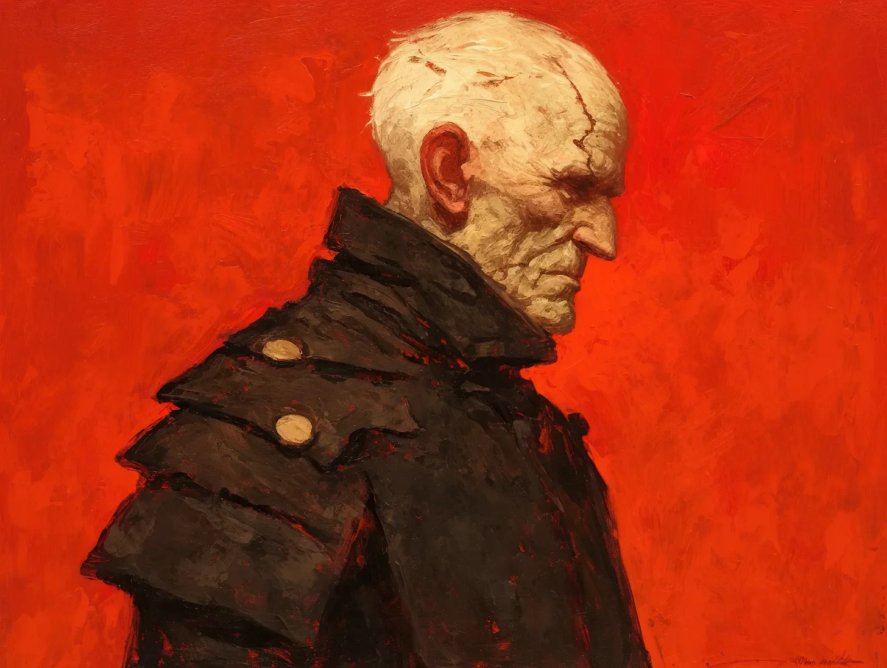

그들은 그를 영원한 사령관이라 불렀다. 비록 그는 지구가 잿더미로 변하기 전 어머니가 속삭였던 자신의 진짜 이름을 오래전에 잊어버렸지만.
[They called him the Eternal Commander, though he’d long forgotten his real name—the one his mother whispered before Earth turned to ash.]
화성의 일몰이 제7 돔의 곡선 벽을 그의 기억 속 핏빛과 같은 색조로 물들였다. 인류가 점점 줄어드는 것을 지켜본 3세기의 시간은 그에게 합성 장기들의 기계적인 윙윙거림과 끝없이 웅웅대는 관리 드론들만을 남겼다. 티타늄이 박혀있는 그의 손가락이 뺨의 균열을 더듬었다. 그곳에서는 생체 합성 피부가 젖은 종이처럼 벗겨지기 시작해, 그 아래에서 맥동하는 은빛 회로망이 드러나고 있었다. 그를 복구하기 위한 나노봇들은 이제 그의 혈관을 기어다니는 벌레처럼 느껴졌고, 그들의 미세한 턱이 남아있는 얼마 안 되는 유기물을 찢어내고 있었다.
[The Martian sunset painted Dome Seven’s curved walls in the same bloody shade as his memories. Three centuries of watching humanity dwindle had left him with little but the mechanical whir of his synthetic organs and the endless hum of maintenance drones. His titanium-laced fingers traced the crack in his cheek, where the bio-synthetic skin had begun to slough away like wet paper, revealing the mesh of silver circuitry that pulsed beneath. The nanites meant to repair him now felt like insects crawling through his veins, their microscopic mandibles tearing at what little organic matter remained.]
마지막 천 명의 인류가 아래층의 동면 포드에서 잠들어 있었고, 그가 제공할 수 없는 구원을 기다리고 있었다. 주기가 지날 때마다 또 하나의 포드가 고장 났다. 또 하나의 불빛이 꺼져갔다. 신경 인터페이스가 박혀있는 티타늄 기둥인 그의 척추는 원래의 척추와 융합된 부분이 아팠고, 금속과 뼈의 결합은 해가 갈수록 더욱 부조화스러워졌다.
[The last thousand humans slept in their cryo-pods below, waiting for a salvation he couldn’t provide. Each passing cycle, another pod failed. Another light winked out. His spine—a titanium column studded with neural interfaces—ached where it fused with his original vertebrae, the marriage of metal and bone growing more discordant with each passing year.]
“상태 보고,” 그가 명령했다. 그의 음성박스에서 지직거리는 잡음이 들렸고, 이는 그의 신체가 기계적 개선에 저항하는 또 다른 신호였다.
[“Status report,” he commanded, his voice box crackling with static, another sign of his body’s rebellion against its mechanical improvements.]
“247번 포드가 심각한 고장을 보이고 있습니다, 사령관님,” AI가 응답했다. “대상의 신경 패턴이 저하되고 있습니다. 예상 종료 시간 6시간 후입니다.”
[“Pod 247 showing critical failure, Commander,” the AI responded. “Subject’s neural patterns degrading. Estimated terminus in six hours.”]
그는 냉동실로 내려갔고, 걸음을 내딛을 때마다 사이버네틱 다리에 충격파 같은 고통이 전해졌다. 관절 윤활유는 수년 전에 결정화되었고, 이제는 금속이 금속과 맞부딪히며 그의 몸이 더 이상 처리할 수 없는 미세한 금속 부스러기를 만들어냈다. 수세기 동안 같은 여정으로 반들반들해진 계단은 그의 부패를 목격하고 있었다—합성 피부의 작은 조각들과 검게 변한 유압액 방울들이 그의 통행을 표시하고 있었다.
[He descended to the cryo-chamber, each step sending shockwaves of pain through his cybernetic legs. The joint lubricant had crystallized years ago, and now metal ground against metal, sending up microscopic shavings that his body could no longer process. The stairs, worn smooth by centuries of the same journey, bore witness to his decay—tiny flakes of synthetic skin and drops of blackened hydraulic fluid marking his passage.]
포드의 거주자는 젊었다—결정이 내려지기 전에 태어난 마지막 세대일 정도로 너무나 젊었다. 서리 낀 유리를 통해 보이는 그녀의 얼굴은 그들 모두가 지녔던 것과 같은 평온한 표정을 띠고 있었다. 그의 증강된 시야가 깜빡거렸고, 손상된 파일들이 그녀의 얼굴 위에 그가 이미 잃어버린 수천 명의 모습을 겹쳐 보이게 하는 잔상을 만들어냈다.
[The pod’s occupant was young—so young she must have been one of the last born before the Decision. Her face, visible through the frosted glass, carried the same serene expression they all wore. His augmented vision flickered, corrupted files creating ghostly afterimages that overlaid her features with those of the thousands he’d already lost.]
사라 첸, 19세. 마지막 식물학자. 지구의 잃어버린 종자 은행을 재건할 마지막 희망. 그의 손이 포드의 표면에 닿았고, 그의 망가져가는 손바닥의 온도 센서가 냉각 시스템의 또 다른 고장을 알리는 점진적인 온도 상승을 감지했다. 센서들이 불규칙하게 맥동하며 상충되는 데이터를 보내왔고, 이는 그의 시야를 정적으로 흐릿하게 만들었다.
[Sarah Chen, age 19. The last botanist. The last hope for rebuilding Earth’s lost seed bank. His hand rested on the pod’s surface, temperature sensors in his failing palm registering the gradual warming that signaled another failure in the cooling system. The sensors pulsed erratically, sending conflicting data that made his vision swim with static.]
그는 그들 모두를 구하기 위해 자신을 개조했다. 각각의 업그레이드, 각각의 교체는 그를 더 나은 수호자로 만들기 위한 것이었다. 완벽한 파수꾼. 불멸의. 지치지 않는. 헌신적인. 하지만 그들이 하나씩 죽어가는 것을 지켜보면서, 불멸이란 단지 정교한 형태의 고문일 뿐이라는 것을 배웠다. 그의 몸은 구식 기술의 박물관이었다—양자 프로세서와 연결하려 고군분투하는 1세대 합성 장기들, 그 아래의 금속 구조를 거부하는 인공 배양된 피부 조각들.
[He had modified himself to save them all. Each upgrade, each replacement, was meant to make him a better guardian. The perfect sentinel. Immortal. Tireless. Devoted. But watching them die, one by one, had taught him that immortality was just an elaborate form of torture. His body was a museum of obsolete technology—first-generation synthetic organs struggling to interface with quantum processors, patches of vat-grown skin rejecting the metal framework beneath.]
“사령관님,” AI가 끼어들었다. “당신의 신경 피질에서 비정상적인 활동이 감지되었습니다. 즉각적인 진단을 권장합니다. 당신의 뇌척수액에서 금속 오염이 위험 수준으로 나타나고 있습니다.”
[“Commander,” the AI interrupted. “I’ve detected anomalous activity in your neural cortex. Recommend immediate diagnostic. Your cerebrospinal fluid shows critical levels of metal contamination.”]
그는 그것을 무시했다. 최근 글리치가 점점 강해지고 있었다—기억의 파편들이 사이버네틱 장벽을 뚫고 흘러나왔다. 어머니의 얼굴. 진짜 사과의 맛. 그의 원래 인간의 심장이 가졌던 무게. 각각의 기억된 감각은 그의 신경망을 통해 피드백 루프를 보내며, 인공 눈 뒤에서 불꽃이 춤추게 만들었다.
[He ignored it. The glitch had been growing stronger lately—fragments of memory bleeding through his cybernetic barriers. His mother’s face. The taste of real apples. The weight of his original, human heart. Each remembered sensation sent feedback loops through his neural network, causing sparks to dance behind his artificial eyes.]
사라의 포드가 마지막 경고음을 울렸다. 붉은 빛이 감도는 어둠 속에서, 그는 3백 년에 걸쳐 만들어온 결정을 내렸다. 이제 금속 골격이 드러난 세 개의 손가락이 제어판을 가로질러 날았고, 긴 화성의 밤 동안 비밀리에 코딩해둔 시퀀스를 시작했다.
[Sarah’s pod beeped its final warning. In the red-tinted darkness, he made a decision three hundred years in the making. His fingers, three of them now exposed to their metallic skeleton, flew across the control panel, initiating the sequence he’d coded in secret during the long Martian nights.]
“사령관님, 이 행동은 기본 프로토콜을 위반합니다—”
[“Commander, this action violates primary protocols—”]
“오메가-세븐-나인 오버라이드. 실행.”
[“Override Omega-Seven-Nine. Execute.”]
냉동실이 생동감 있게 움직이기 시작했다. 평소와는 다른 방식으로, 천장의 먼지를 떨어뜨릴 만큼 더 깊은 공명으로 울렸다. 모든 포드가 동시에 해동 시퀀스를 시작했다. 그들이 죽을 운명이라면, 깨어난 채로 죽을 것이다. 인간으로서 죽을 것이다.
[The cryo-chamber hummed to life. Not in the usual way, but with a deeper resonance that shook dust from the ceiling. Every pod began the revival sequence simultaneously. If they were going to die, they would die awake. Die human.]
포드들이 하나씩 쉬쉬 소리를 내며 열리는 동안, 사령관은 자신의 뺨의 균열이 더 깊어지는 것을 느꼈고, 합성 피부가 타는 종이처럼 벗겨져 나갔다. 그 아래의 금속은 산화되기 시작했고, 3세기에 걸친 화성의 대기가 마침내 그의 밀봉된 시스템과의 전쟁에서 승리를 거두고 있었다. 그의 업그레이드들이 실패하고 있었다—해동 시퀀스와 함께 그가 촉발한 연쇄적인 시스템 셧다운이었다. 관절에서 유압액이 새어나와 그의 발치에 검은 웅덩이를 만드는 동안, 수세기의 무게가 그의 의식을 짓눌렀다.
[As the pods hissed open one by one, the Commander felt the crack in his cheek split further, synthetic skin peeling back like burning paper. The metal beneath had begun to oxidize, three centuries of Martian atmosphere finally winning its war against his sealed systems. His upgrades were failing—a cascade of system shutdowns he’d triggered alongside the revival sequence. The weight of centuries pressed against his consciousness as hydraulic fluid leaked from his joints, forming black pools at his feet.]
사라의 눈이 가장 먼저 깜빡거리며 떠졌고, 그가 어떤 모습이 되었는지를 보자 혼란스러움이 공포로 바뀌었다—실패한 살점과 부식된 금속의 패치워크 같은 존재. 하지만 거기에는 알아보는 기색도 있었고, 다른 무언가도 있었다. 인간다운 무언가가.
[Sarah’s eyes fluttered open first, confusion giving way to horror as she saw what he had become—a patchwork thing of failing flesh and corroded metal. But there was recognition too, and something else. Something human.]
“이제 기억이 났어,” 그가 속삭였다. 그의 시스템이 실패하고 어머니의 목소리가 마침내 그의 기억 속에서 선명하게 울렸다. 마지막 남은 합성 피부가 떨어져 나가며, 수세기의 사용으로 긁히고 마모된 크롬 골격을 드러냈다. “내 이름은 데이비드였어.”
[“I remember now,” he whispered, as his systems failed and his mother’s voice finally echoed clear in his memory. The last of his synthetic skin fell away, revealing the chrome skeleton beneath, scored by centuries of use. “My name was David.”]
화성의 붉은 먼지가 돔 밖에서 소용돌이쳤고, 인류의 마지막 저항이라는 드라마에 무관심했다. 하지만 돔 안에서, 3세기 만에 처음으로, 영원한 사령관은 죽을 수 있다는 달콤한 안도감을 느꼈다. 그의 기계적인 몸이 그것이 만들어진 기본 원소들로 분해되어 가고 있었다.
[The red dust of Mars swirled outside the dome, indifferent to the drama of humanity’s last stand. But inside, for the first time in three centuries, the Eternal Commander felt the sweet relief of being able to die, his mechanical body breaking down into the base elements from which it was forged.]